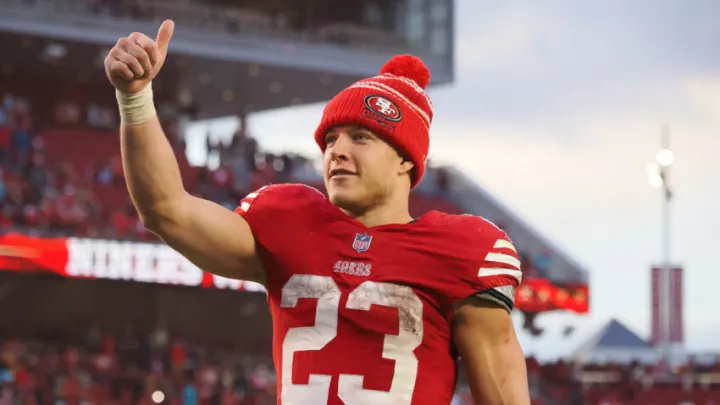
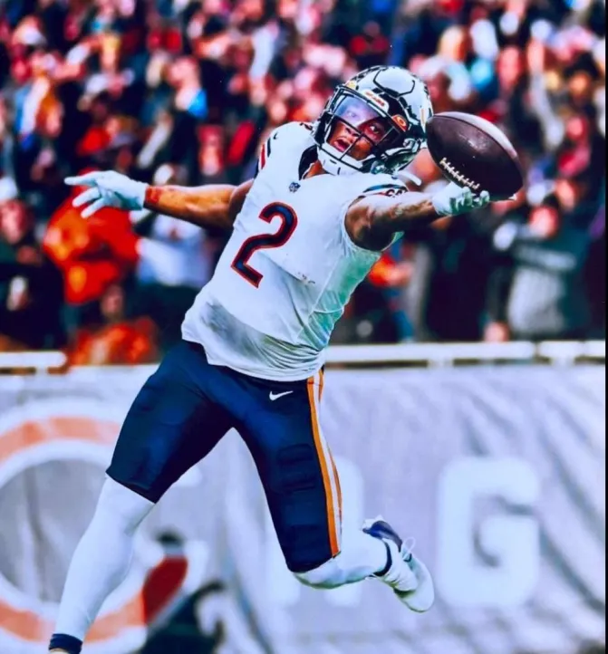
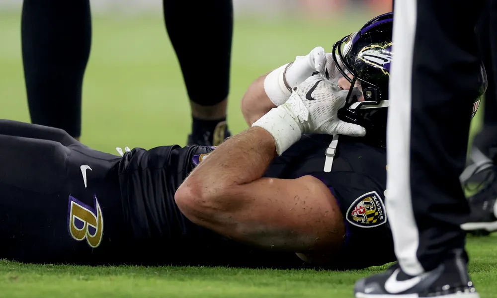
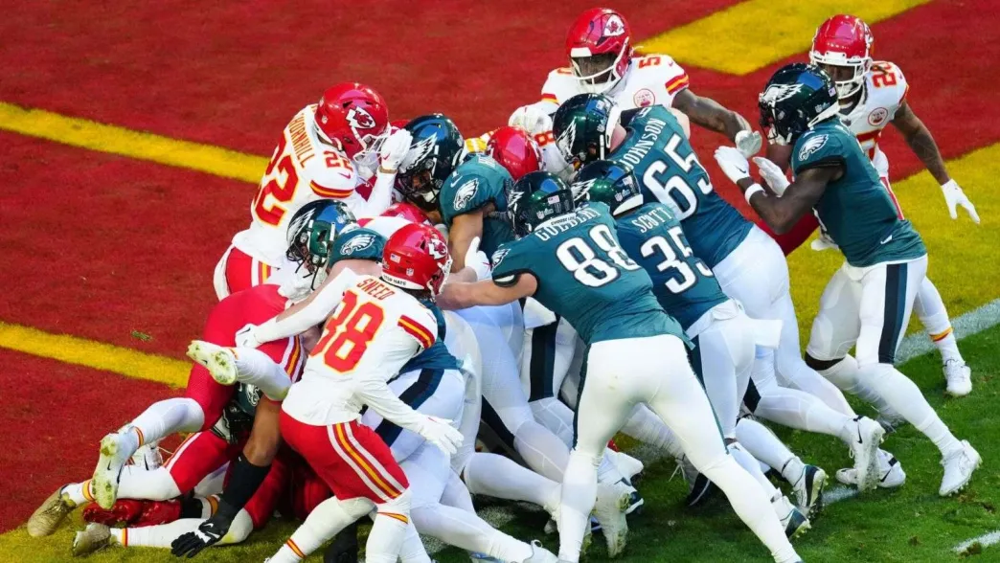
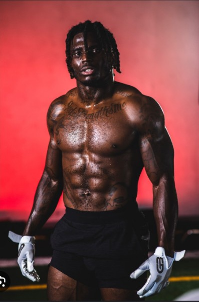
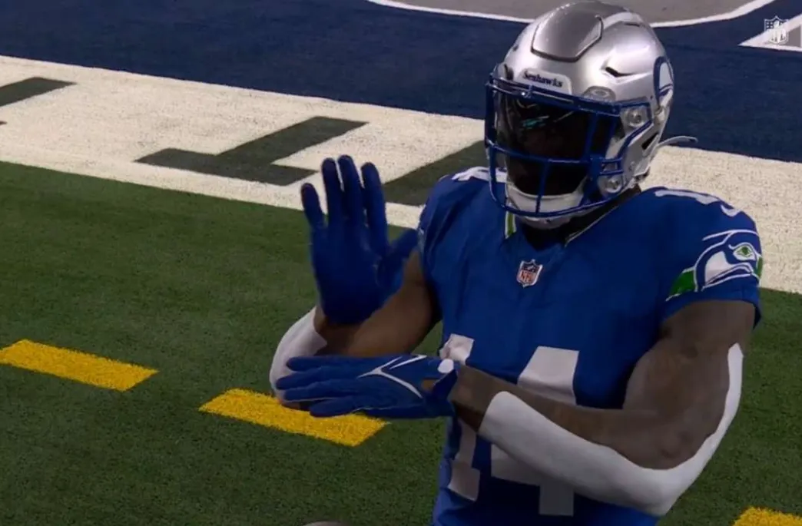
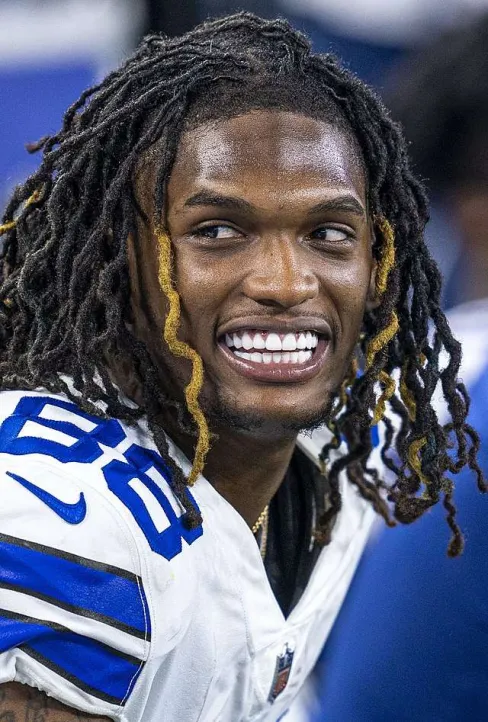

Season Wrap-up
Authored by: Jake Bowen
As we head into the playoffs, there’s one thing for certain… Oregon sucks at fantasy football! The playoffs is set with teams from California, Arizona, Colorado, and Washington. Man the fuck up next year, Oregonians!
But, there is one good thing to come out of that - the belt is definitely changing hands, as Seif will not be in the running for his fourth* title.
Trades in the evening, waivers in the morning, group chatting all day… this time of the year makes me sad, knowing the end is nigh. Another great season in the books, and an exciting postseason to come. Thanks, you Fantasy Fucks, for making this the best league ever! 💞
* Three for Seif, one for Tom
Congrats to the winners of the regular season $100 prizes, let them not be forgotten. Regular Season First Place: Not Diggin that Mustard (9-4) Most Points For: Not Diggin that Mustard (PF 1764.14) Longest Winning Streak: JA MONTG (six wins) Highest Scoring Week: Tua Williams One Kupp (209.22, Week Four)
Regular Season Awards
Authored by: Jake Bowen
🥺 Biggest Letdown
It’s always easiest to look at my own team and see these things, but I have a few worth mentioning here, but let’s start with #1: Justin Fields.
Drafted as a top five/six QB, he enters this week as QB22. Here are some guys ahead of him… Baker Mayfield, Joshua Dobbs, Matt Stafford, Kirk Cousins, and Derek Carr, not to mention Jordan Love, Sam Howell and CJ Stroud in their first seasons as starting QBs. Fields was a complete fucking mess.
🎖️ Honorable Mentions For me, Austin Ekeler was gonna be my savior and stunk. Throw Jeudy and Garrett Wilson in there, and I had some major letdowns.
Joel had a similar fate, trading for Josh Jacobs who had some great weeks, but was very up and down. And the same with Chris Olave, who at one point was unstartable… but you couldn’t not start him! Though he’s had a nice bounce back at the end of the season.
🤯 Most Surprising (In a Good Way)
Father time was definitely defeated this year, as Mike Evans and Keenan Allen said nuh uh, I ain’t done yet. Not only were they awesome, but they were great values for where they were picked, and both stayed pretty much healthy - even playing after being Questionable a few times!
🎖️ Honorable Mentions How about Raheem Mostert’s health!? I traded that man because I was not willing to have him on my team when he went down, and thought the Dolphins backfield would soon be crowded. He didn’t care, and said, 🖕, how about I finish as RB2?
I sometimes think, what if teams just trained guys to play many positions like this… I mean this guy can’t be that unique, or is he really? Yep, talking about Taysom Hill having a very consistent season for once. (pair this with him being picked up to replace Andrews who went out on a trade to bring in the most consistent WR, the Sun God)
🌟 The Future Is Bright
This one was relatively easy, as their success IRL translated pretty well into FFB. It’s the Bright Future Texans.
Stroud (QB4) won’t, but will be in the running for the MVP, as a fucking rookie. Pair that with Nico Collins (WR12) in only his third year (with the other two with no real QB), and fellow rookie, Tank Dell (WR19, get well soon), and they look like a bonafide elite offense in the near future.
🎖️ Honorable Mentions Another couple of rookies were stellar: * Jordan Addison (WR20), stepped up in a big way with JJettas going down, and would be even higher if Cousins had stayed healthy. * Sam Laporta set the world on fire. Lock him in as an elite TE for the near, and far future. * CeeDee Lamb seems just a little to old to be here, but I’m including him. He really blossomed this season, in an AJ Brown kinda way, and he and Brown are going to be in the conversation for WR1-WR5 range next season… they weren’t far off, but there are arguments to be made next year for sure.
🏆 Most Valuable Player
We know him, we love him, he’s Josh Allen!
In a year of up-and-down QB play, where the top five contains three guys who were not drafted, or drafted as backups (and Jalen Hurts), Josh Allen was consistent and great - for FFB purposes and mostly IRL, but let’s not go there.
Tony spent on Allen with the first pick of the third draft, but that price was worth it. He can go into the locker room and share this award with the overall #1 pick CMC, as Tony smashed the draft. The pick in the middle helped land the TE2, Kelce, and march Tony toward the playoffs. So this is a bit of a Most Valuable Manager - though I really loved CJ’s work this year too.
🎖️ Honorable Mentions * CMC - number one pays off in a huuuuge way * Dak - an amazing pickup for CJ down the stretch * Kamara - RB4 after missing four games, again helping CJ when it mattered * Tyreek - #1 overall, where’s my team without him?
Stupid Sexy Slutlers Showdown
We all know what really matters, and what you came here looking to read… thanks to all our guest authors for their great write-ups on the Slutler Bowl!

5th Place - Matt
Tua Infinity and Bijan +50 seed bonus Authored by: PJ Hardcastle
Regular season highlights * First survivor pool winner * Did his first ever draft and his first ever trade
Slutler outlook Seif looked like he had the best WR duo at the start of the season with Chase (WR5) and Kupp (WR55) but it wasnt enough for him to squeak into the playoffs so he’ll be dancing in the slutler pool. The Tank Dell pickup was also looking strong until that nasty season ending injury. Can LaPorta and ETN keep it up and keep him out of last place with that 50 point buffer? Stay tuned.
Parting thought We’re all happy this guy drafted his first ever team himself, even more happy he’s in the Slutler Bowl though. He’s normally been a playoff lock. His team is pretty strong on paper. He had the lowest points allowed this year and wasn’t able to make the playoffs with 3 1st round picks (Kupp, Chase, Bijan)

6th Place - Andy
Jus-Kareemn-4-Herb +40pt seed bonus Authored by: Tony Warner
Regular season highlights
Overall 6th place but 9th in PF First to run out of FAB at week 8 (will he blow his recharged load out the gate) Mandrews trade didn’t work out well  Slutler outlook- Stacked at WR1 and WR2 (Devonta smith and Evans) with high ceiling. Swift has been solid in good matchups but lacking in tough matchups. Luckily week 15/16/17 SEA/NYG/ARI look like favorable. Herbie will bounce back but I have questions around Warren and anyone on WAS. Who will show up at TE and can his team consistently boom for 4 weeks?
Slutler outlook- Stacked at WR1 and WR2 (Devonta smith and Evans) with high ceiling. Swift has been solid in good matchups but lacking in tough matchups. Luckily week 15/16/17 SEA/NYG/ARI look like favorable. Herbie will bounce back but I have questions around Warren and anyone on WAS. Who will show up at TE and can his team consistently boom for 4 weeks?
Parting thought A win is a win and Andy has been able to find them in the regular season but slutler comes down to points alone. Only Kris Turner and PJ (?!) has less MAX PF than Andy through the regular season. Will +40 be enough to keep Andy from becoming our next Slutler?

7th Place - Joel
Hurts Donut +30pt seed bonus Authored by: Tony Warner
Regular season highlights Overall 7th in rankings but 5th in PF. Week 1 trade arguably turned out well by the numbers. Gained Jakobs (#9RB and 46th overall) + Goedert (#16TE after only playing 8 games) Lost Kelce (#2TE and 35th overall) and Miles Sanders (hot garbage). Slutler outlook - Hurts and the brotherly shove may single-handedly push this team past the pile of potential slutlers. Great young wide receivers in Puka Nacua (potential 2024 keeper pick?!) and Chris Olave. Mixon and Jakobs have been solid RBs. Moss/ Kirk/ Sutton have all played well enough at times (cracking into top 10 at their respective positions) but leave the flex position a bit suspect. Will cowboys D stay a good play against some above .500 teams?
Parting thought By the numbers Joel had a 200 PF separation from last place which on average is 15 points better per week. With a seed bonus of 30 points and 4 weeks of Slutler fun, Joel has a reasonable 90 point buffer. That being said this is fantasy football and not calculus. Will the numbers betray Joel and hand him the Sluter?

8th Place - Snake (Rhymes with Jake)
Exotic Engrams +20pt seed bonus Authored by: Chris Johnson
Regular season highlights Overall 8th place finish but started off the year on top of the pack. There were so many trades that occurred that it is tough to keep track of what could have been. But let’s try anyways!
Trade #1 of 5 - Week 2 Snake claimed his secret lover Jeudy from Kris with 26% of his annual FAAB. He played him for 3 out of 7 weeks with an avg. score of 10.7 pts., and then dropped him back to the wire. But, just this morning he reunited with the 53rd ranked WR again, possibly to Keep him for next year.
Trade #2 of 5 - Week 3 The next week Snake wasn’t feeling the Love anymore, so he ponied up both Jordan and the now 2nd ranked RB Mostert to claim the older, but tried and true Mahomie. Love is now the 9th ranked QB vs Mahomes at 8th. What happened Mahomes??
Trade #3 of 5 - Week 4 The next week he swapped RBs with Andy to give up the hottest rookie young gun RB Achane for the #1 RB of the past Dalvin Cook, I mean Austin Ekeler. Afterwards Achane was injured and missed a lot of time so maybe this was a good trade, but Ekeler eventually started slowing down and has been disappointing the last few weeks. Hopefully he’ll get back on track with an epic series of deep green playoff matchups that he has over the next four weeks though.
Trade #4 of 5 - Week 4 Traded away AK41 for Hot Lockett right before Kamara came back from suspension, not knowing if he was going to boom or bust for the year with Jamaal Williams in the mix. Snake shopped Kamara with almost the whole league but no one would bite, so he went with the best offer on the table. At the time it felt uncertain and balanced, but in hindsight this one ended up being surprisingly one-sided to the extreme.
Trade #5 of 5 - Week 11 This is the third trade of the year between Snake and Kris! They did a WR/TE swap this time and it seems balanced. Snake gained Thielen/Waller and Kris gained Lockett/McBride. Thielen has since disappointed but Waller might return next week and make a big splash.
This team’s outlook has changed dramatically due to an epic amount of trades as the original squad is almost non-existant. New team name could be Trade-O-Rama.
I’m not sure, but an addiction might be starting to kick in so please reach out to the intervention line asap at 1-800-877-8902.
Slutler outlook Snake’s team has been the one that typically has high projections, but then ends up falling short of the target on some weeks. There are some heavy hitters for sure, like Tyreek obviously. But looking for some more consistency though to make it through the 4-week Slutler marathon unscathed!
Parting thought If Waller can dust off the old hammy next week, both him and Ekeler have a JUICY playoff schedule!! 👀

9th Place - Kris (Chris spelled uniquely)
Love Heem +10pt seed bonus Authored by: Chris Johnson
Regular season highlights Ranked last in Points For and first in Points Against, but somehow rallied to steal the 9th overall rank from Neil!
Jeudy was a 5th rd draft disappointment (now 53rd ranked WR) but Kris was able to trade him to Snake for Cooks and a ton of FAAB a couple weeks into the season. The next week Kris scored on another early season trade with Snake and got Mostert (now 2nd ranked RB) and Love (now 9th ranked QB) for Mahomes (now 8th ranked QB). But overall this team just didn’t have the consistency to get those needed Ws. Kris scored some great players, but with Ridley, Davis and Mattison all running hot or cold this season that makes it hard to be confident in your choices.
Slutler outlook This team has finally come to life at the end of the season as Kris holds a 136 point average over the last three weeks. If he can keep this hot steak rolling then you can’t count him out, but consistency is going to be key.
Parting thought It looks like DK is getting hot for an end of season playoff run. Are his great matchups and new sign language shit talking going to be enough to carry this team out of the hole? We’ll 👀

Last Place - Neil
Unpaid Bills +0 pt seed bonus Authored by: PJ Hardcastle
Regular season highlights This mother fucker was in last and then challenged Seif to a most points scored at the end of the season (from week 7 forward include playoffs) after Seif put up 209.22 and is currently leading the bet. He put his money where his mouth is and pulled his team together to score some nice points. Sadly those didnt transfer into wins, he also finished with 2nd most points allowed which doesn’t normally transfer well onto the W column.
Parting thought This team can still put up points. Will the last trade of the season acquiring Aiyuk for White pay off? CD is puttin up some amazing numbers where it can totally pull him out of last place. I’m looking forward to seeing the newly revitalized Giants offence and Saquon running in some more TDs. This team may be the last seed, but don’t sleep on him.
2023 Fantasy Fucks Playoff Preview
Presented by Hurts Donut and Unpaid Bills
Welcome Fucks, to this week’s episode of 2nd Take! Co-hosts Joel “Skip” Hernandez and Neil “Shannon” Calvert are here to take you through the playoff semi-finals featuring 4 teams that are all pretty decent…I GUESS.
No. 1 seed Not Diggin that mustard (Chris) takes on No. 4 seed 8========D (PJ) No. 2 seed JA MONTG (Tony) takes on No. 3 seed Sweet Brotha Numpsay (Pangy)
Neil: Nobody’s really sure how PJ’s shaft got so damn big at 8 wins, but that doesn’t matter - he’s in the playoffs and facing a stacked opponent in CJ. Not only that, he gets Justin Jefferson back at just the right time…but how will his return impact Hockenson? Will he eat up all the targets, or will he open up space for Hock to get his (which he has done ALL year). Unfortunately, Kirk “Kirk” Cousins is obviously out for the year, so there’s a huge question mark there at QB. There are some absolute studs on both teams (Diggs/Keenan WR stack for CJ, oh my) - but ultimately I think the x-factor in this matchup is which Vikings pass catcher better produces over their expected output.
Pangy barely squeaks in thanks to an incredible Week 13 win against Tony, and for their troubles - they get to meet again immediately in the first round of the playoffs. Pangy desperately needs himself a QB this week, who is he gonna pick up off the wire? My man JA17 for Tony could be out here slinging it during some must-win games for Buffalo and could provide a huge help in neutralizing some of Pangy’s elite skill players. AJ Brown…’nuff said. But how about this - over weeks 3 and 4, RBs Achane and Williams combined for an insane 114.5 total points. If they can somehow replicate that two week stretch, it’s game over.
Joel: Well, obviously PJ is lucky and there is no other way to explain it. How in God’s green Earth did this pathetic team who only scored 1537 points get in? Who knows, maybe he used commissioner powers to rig it? I digress. This team is going up against a juggernaut in the Diggs/Allen WR duo. I think the biggest question mark here is DeAndre Hopkins in the flex. I mean this guy has been up and down all year long and the Titans are terrible. Then again, CJ’s weak point is his bench. He’s got NOTHING!
OH MY THE DRAMA with the matchup between Pangy and Tony. The slut has an incredible bounce back year. Yeesh! Pangy has been on fire lately with his RB duo but you don’t really think that can hold up can you? I mean Tony has C-M-FUCKING-C leading his RB group. You know the Chiefs are about to turn it on with Kelce too. It’s crunch time for them and they have never disappointed at the home stretch of the season. They face off against the Bills too. Speaking of Bills. The only thing that could really put Tony in jeopardy, in my honest opinion, is Josh Allen. I mean COME ON MAN. If Allen ends up being the QB1 for the Chiefs this week Tony could really be in trouble!
Neil: It pains me to say it, but this just feels like a spot where PJs luck is going to continue. I’m expecting both of these teams to score well over the next two weeks, but Jefferson coming back will indeed be the difference in this matchup. JJs 23 ppg will lead PJ to an extremely narrow victory.
Prediction: Not Diggin that mustard: 248 - 8========D: 251
While Allen finishes the next two weeks as fantasy QB1, Kelce nets a meager 15 total points and Pangy’s Cinderella run continues with a trip to the final. CMC “disappoints” with only 20 ppg, and Pangy’s young RB duo pops off…not for a combined 114 points, but enough to put him over the top. A huge bounce back year for our reigning Slutler, but unfortunately comes to an end in round 1.
Prediction: JA MONTG: 245 - Sweet Brotha Numpsay: 253
Joel: PJ’s luck does indeed continue and its GG EZ CALLAOS. Sorry CJ, better luck next year.
Prediction: Not Diggin that mustard: 245 - 8========D: 259 🏆 🏆
Allen can absolutely finish QB1 the next two weeks, as long as that next two weeks happens in his dreams. Kelce comes up huge with his girlfriend in attendance. CMC does CMC things and puts JA MONTG over the top of Pangreeeee
Prediction: PANGREEEE: 228 - JA MONTG: 240 🏆 🏆
An oversized thanks to everyone who wrote for the very special, special edition of our write-ups!
Good luck in the postseason, to everyone besides Matt, Andy, Joel, Kris and Neil! - Snake